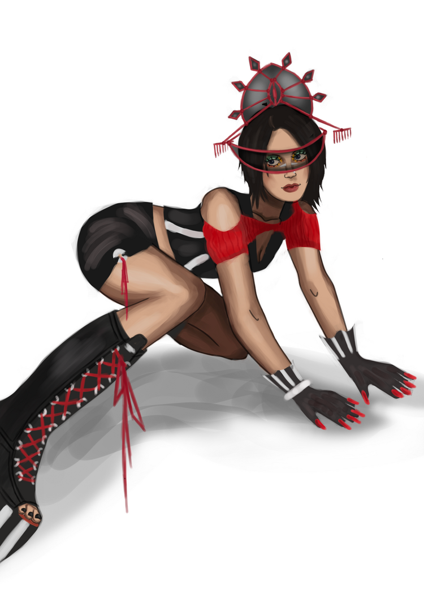

Misa Miller, better known by her stagename 'Miss Riot', is an experimental performative pop artist existing in 2004. With the release of her debut album 'PartyRevulsion' in 2003, she's managed to climb the charts and claim her spot as an overnight sensation. Now, by pushing her artisitc endeavors beyond her music, she remains an international sensation through her groundbreaking fashion habits, questionable social-norms, and everlasting charting singles. Her music has managed to withstand the test of time, with multiple breakthrough awards lined up for the 2004 awards season.
Miss Riot for Obscura* Magazine, 2004.
Misa's Characteristics
- She is very expressive.
- She can be very enlightening when she wants to be.
- She really hates people who present themselves as being fake.
- She tends to be very eccentric and compulsive.
Misa's Connections/Relationships
- Stacey Miller, Younger Sister
- Unnamed Father, Unnamed Mother
- "T", nickname for an unconfirmed on and off boyfriend, alleged fellow rockstar.
- Riot Palace, the name of her expansive creative team